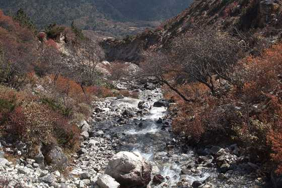
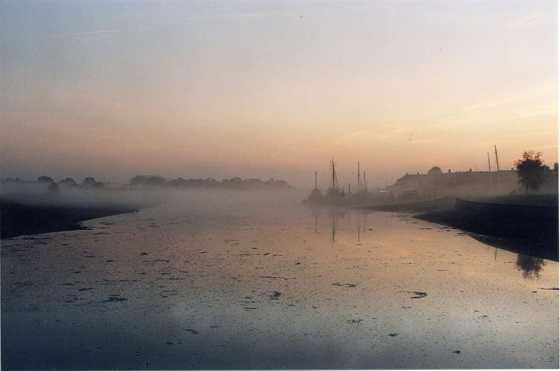
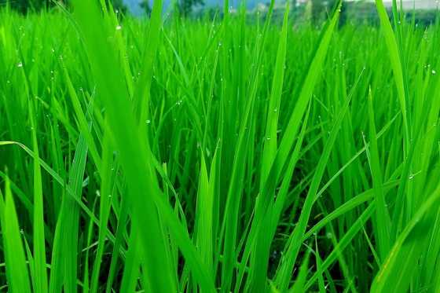
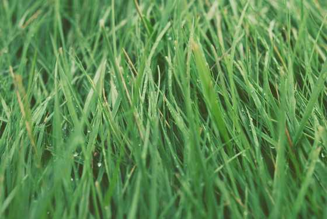
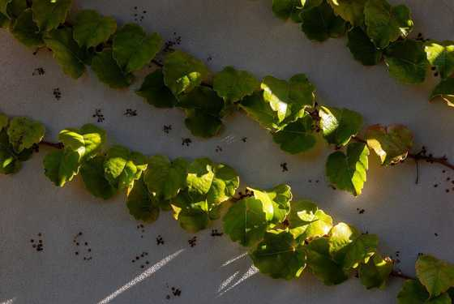
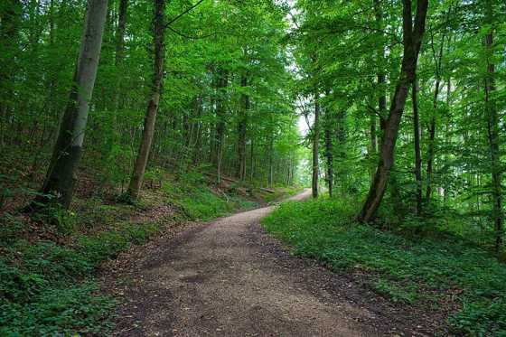

西伊豆・仁科のコーヒースタンド
川辺をわたる風のように、
やさしいひと息を。
「ほたるの風」は、静岡県西伊豆町仁科にあるコーヒースタンドです。
店のこと
コーヒースタンド「ほたるの風」は、西伊豆町仁科にあるお店です。Instagramでは、毎週火曜日・水曜日をお休みに、9時30分から16時まで営業していると案内されています。
店名の由来や開業のきっかけは、公開情報からは確認できませんでした。このページでは、「ほたる」と「風」という言葉から受ける制作側のイメージとして、水辺の涼しさと、ほのかな灯りのような穏やかさを配色と写真に込めています。

電話番号:準備中
メニュー
コーヒースタンドとして営業しています。Instagramの投稿では、コーヒーのほか、スムージーやレモネードのような飲み物も見られます(画像からの推測で、確認済みメニューではありません)。
コーヒー
詳細は準備中
その他のドリンク
詳細は準備中
価格
準備中










写真は全てフリー素材のイメージで、店舗の実際の様子ではありません。
口コミ(イメージ例)
イメージ例
散歩の途中に立ち寄って、温かい一杯でほっとできました。
イメージ例
気軽に寄れる雰囲気で、飲み物を片手に海の町をのんびり歩けました。
イメージ例
朝の早い時間から開いているのが旅の途中にはうれしいです。
上記は制作側が作成したイメージ例で、実在のお客様の声ではありません。
アクセス・情報
- 店名
- ほたるの風(コーヒースタンド)
- 住所
- 〒410-3514 静岡県賀茂郡西伊豆町仁科521-154
- 営業時間
- 9:30〜16:00(Instagramの案内による)
- 定休日
- 火曜日・水曜日(同上)
- 電話
- 準備中
- @hotaruno_kaze
写真クレジット
写真はフリー素材(クリエイティブ・コモンズ等)のイメージです。
- candle.jpg:3-52 Rule of Thirds - Flickr - hms831 / Heidi (hms831) / CC BY-SA 2.0
- lamp.jpg:Warm light in the dining room (Unsplash) / eberhard grossgasteiger / CC0 1.0
- river.jpg:Morning Mist on the Lake 11 - geograph.org.uk - 2799805 / Daniel Karmy / CC BY-SA 2.0
- lake.jpg:Mist on Lake Whatcom, 2019 / U.S. Department of Agriculture / CC0 1.0
- forest.jpg:Sunlight through the trees (Unsplash) / Dawid Sobolewski / CC0 1.0
- mistforest.jpg:Foggy autumn forest in the morning / Sergey Pesterev / CC BY-SA 4.0
- path.jpg:Forest path surrounded by green trees / Zed Can77 / CC0 1.0
- stream.jpg:Pangboche, Mountain stream, Nepal / Vyacheslav Argenberg / CC BY 4.0
- dew.jpg:Dew on Grass, beautiful greenery / IamAnisurrahman / CC0 1.0
- wetgrass.jpg:Wet grass (Unsplash) / Sujan Sundareswaran / CC0 1.0
- drops.jpg:Raindrops on a green leaf closeup. / Nenad Stojkovic / CC BY 2.0
- leafdew.jpg:Dew in green leaves / Gorupka from Slovenia / CC BY 2.0
- steam.jpg:Coffee steaming in a mug / PedanticNarrativeController / CC0 1.0
- vine.jpg:Dappled light on wall vines, Jardim da Fundação Calouste Gulbenkian, Lisbon, Portugal julesvernex2 / Jules Verne Times Two / CC BY-SA 4.0